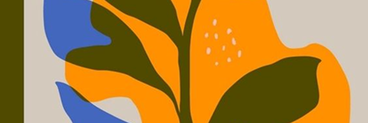
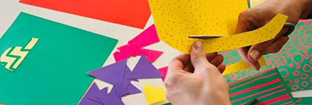

Часть 1
Создание личного бренда через зины

3 модуля 2 проекта зина
Расскажем, как создать личный бренд, найти свой стиль и сформулировать хорошую историю. Научим делать 2 вида зинов, печатать их и сшивать.
1. Основы личного бренда
Партнёрский материал

2. Введение в зины
Теория

3. Создание зинов для бренда
Практика
Часть 2
Продвижение и монетизация через зины
2 модуля Стратегия продвижения
В этой части учебника расскажем, как управлять личным брендом: как его продвигать, расширять и зарабатывать на нём.

4. Продвижение зинов
Практика

5. Монетизация зинов
Практика